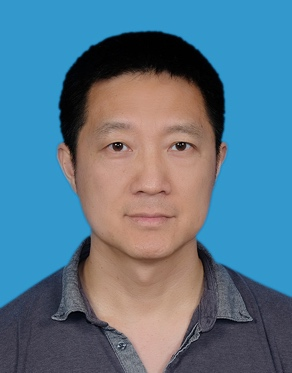

|
Ting Yu
Professor and Program Director of Master in Applied AI
Department of Computer Science
Mohamed bin Zayed University of Artificial Intelligence (MBZUAI)
Email: ting.yu@mbzuai.ac.ae
Phone: +971 2811 3037
|
Short Bibliography and Research Area
Ting Yu is a Professor at the Department of Computer Science, MBUZAI. He is also the director of MBZUAI's Master in Applied AI (MAAI) program. Before joining MBUZAI,
Ting is the research director of the cyber security group at Qatar
Computing Research Institute (QCRI), Hamad Bin Khalifa University, and an associate professor in the faculty of
Computer Science Department, North Carolina State University. He obtained
his BS from Peking University in 1997, MS from Minnesota University in
1998, and PhD from the University of Illinois at Urbana-Champaign in 2003,
all in computer science. He is a recipient of the NSF CAREER Award in
2007.
His research areas focus on data privacy, security data analytics and
network security.
Recent Professional Activities
- Editorial board member:IEEE Transactions on Dependable and Secure
Computing (TDSC, 2015 - ), Computer & Security (COSE, 2017 - 2025), ACM Transactions on Privacy and Security
(TISSEC/TOPS, 2014 - 2023)
- TPC member: ICDE'26, SIGMOD'25, VLDB'25, VLDB'22, AsiaCCS'21, ICDE'21, SACMAT'21, WWW'21, ICDE'20,
SACMAT'20, CIKM'19, ICDCS'19, ICDE'19, CCS'19
Recent Publications
- RavinduDe Silva, Mohamed Nabeel, Charith Elvitigala, Issa Khalil, Ting
Yu, and Chamath Kepptiyagama: "Compromised or Attacker-Owned: A Large
Scale Classification and Study of Hosting Domains of Malicious URLs." To
appear in USENIX Security, 2021.
- Ningyu He, Ruiyi Zhang, Lei Wu, Haoyu Wang, Xiapu Luo, Yao Guo, Ting
Yu, and Xuxian Jiang: "EOSAFE: Security Analysis of EOSIO Smart
Contracts." To appear in USENIX Security, 2021.
- Lun-Pin Yuan, Euijin Choo, Ting Yu, Issa Khalil, and Sencun Zhu:
"Time-Window Based Group-Behavior Supported Method for Accurate
Detection of Anomalous Users." To appear in IEEE/IFIP International
Conference on Dependable Systems and Networks (DSN), 2021.
- Pengcheng Xia, Mohamed Nabeel, Issa Khalil, Haoyu Wang, and Ting Yu:
"Identifying and Characterizing COVID-19 Themed Malicious Domain
Campaigns." To appear in ACM Conference on Data and Application Security
and Privacy (CODASPY), 2021.
- Mohamed Nabeel, Issa Khalil, Bei Guan, and Ting Yu: "Following Passive
DNS Traces to Detect Stealthy Malicious Domains Via Graph Inference."
ACM Transactions on Privacy and Security (TOPS) 23(4):17:1-17:36, 2020.
- Full publication list
Patents
- Mohamed Nabeel, IssaM. Khalil, Ting Yu and Euijin Choo, "Method and
system for domain maliciousness assessment via real-time graph
inference," US20200382533, Pending.
- Issa Khalil, Ting Yu and Marc C. Dacier, "Method to identify malicious
web domain names thanks to their dynamics," US10681070, Issued on June
9, 2020.
- Graham Cormode, Divesh Srivastava, Ting Yu and Qing Zhang, "Method and
apparatus for providing anonymization of data," US8590049, issued on
Nov. 19, 2013
- Divesh Srivastava, Nikolaos Koudas, Ting Yu and Qing Zhang, "Systems
and associated computer program products that disguise partitioned data
structures using transformations having targeted distributions,"
US8209342, issued on Jun. 26, 2012
Honors and Awards
- Best paper award, ACM Conference on Data and Application Security and
Privacy, 2018.
- Best paper award, Annual IFIP WG Working Conference on Data and
Applications Security and Privacy, 2015.
- Best paper award, ACM Conference on Access Control Models and
Technologies, 2012.
- Research Scholarship, K.C.Wang Education Foundation, Hong Kong, 2010.
- CAREER Award, National Science Foundation (NSF), 2017.
- David J. Kuck Outstanding Ph.D. Thesis Awards, University of Illinois
at Urbana-Champaign, 2003.